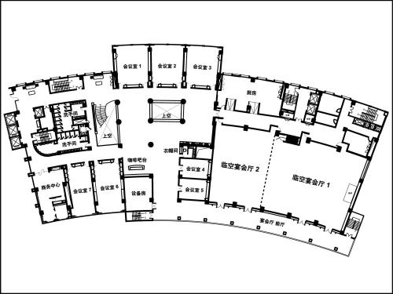

<!--搜索栏-->
<div class="search-bar">
  <ul>
    <li style="width: auto; padding-right: 20px;"><a class="btn-danger">添加</a></li>
    <li>
      <label>楼层
        <select [(ngModel)]="searchFloor.floorNum">
          <option value="">全部</option>
          <option *ngFor="let name of floorNames" [value]="name.FLOOR_NUM">{{name.FLOOR_NUM}}</option>
        </select>
      </label>
    </li>
    <li>
      <label>楼层功能
        <input type="text" [(ngModel)]="searchFloor.floorUse" >
      </label>
    </li>
    <li>
      <div class="search-icon" >
        
      </div>
      <input class="search-btn" type="button" value="查询" (click)="search();">
    </li>
  </ul>
</div>
<!--表头-->
<div class="table-head">
  <table border="0" cellspacing="0" cellpadding="0" class="list-box">
    <tr class="row list-title" style="height:45px;">
      <th width="15%">大楼名称</th>
      <th width="15%">楼层</th>
      <th width="20%">楼层功能</th>
      <th width="35%">楼层平台图</th>
      <th width="15%">操作</th>
    </tr>
  </table>
</div>
<!--表格内容-->
<div class="table-content" style="height: 390px">
  <table border="0" cellspacing="0" cellpadding="0" class="list-box">
    <tr class="row"  style="height:45px;" *ngFor="let floor of floors;let i = index">
      <td width="15%">
        <span *ngIf="!copyFloors[i].editStatus">
          {{floor.buildingName}}
        </span>
        <input type="text" name="buildingName"
               *ngIf="copyFloors[i].editStatus"
               [(ngModel)]="copyFloors[i].buildingName">
      </td>
      <td width="15%">
        <span *ngIf="!copyFloors[i].editStatus">
          {{floor.floorNum}}
        </span>
        <input type="text" name="floorNum"
               *ngIf="copyFloors[i].editStatus"
               [(ngModel)]="copyFloors[i].floorNum">
      </td>
      <td width="20%">
        <span *ngIf="!copyFloors[i].editStatus">
          {{floor.floorUse}}
        </span>
        <select  *ngIf="copyFloors[i].editStatus"
                 [(ngModel)]="copyFloors[i].floorUse">
          <option>车库</option>
          <option>大厅</option>
          <option>餐厅</option>
          <option>办公层</option>
          <option>设备机房层</option>
          <option>多功能厅</option>
          <option>员工活动层</option>
          <option>其他</option>
        </select>
      </td>
      <td width="35%" class="box-demo">
        
        
        <div  *ngIf="copyFloors[i].editStatus" class="btn-upload">
          
          <a>上传
            <input type="file" name="imgPath" class="img-upload" #prese
                   (change)="prese_upload(prese.files,i)">
          </a>
        </div>
      </td>
      <td width="15%" class="box-option">
        
        
        
        
      </td>
    </tr>
  </table>
</div>
<!--翻页-->
<div class="turn">
  <ul *ngIf="pages.length > 1">
    <li *ngFor="let i of pages"
        [hidden] = "pageLimit(i)"
        [ngClass]="{'active':i === pageNo}"
        (click)="goPage(i);">
      {{i}}
    </li>
  </ul>
</div>
<!--图片查看器-->
<div class="view-img" [hidden]="isViewImg">
  <div class="back"></div>
  <span class="close" (click)="closeViewImg()"></span>
  
  <div class="option-bar">
    <span class="enlarge" (click)="addImg()"></span>
    <span class="less" (click)="decsImg()"></span>
  </div>
</div>
